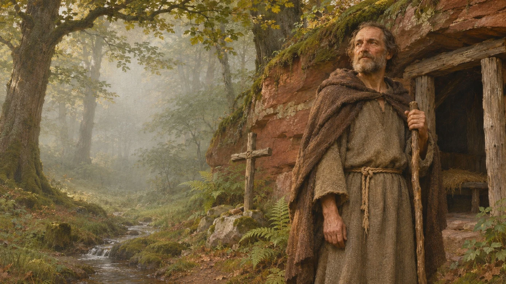
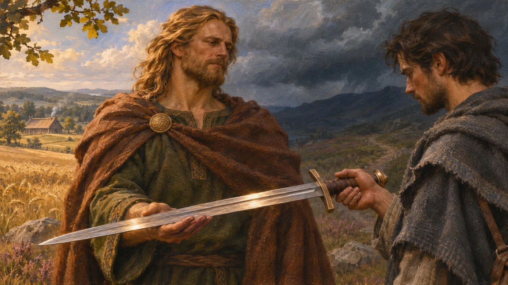
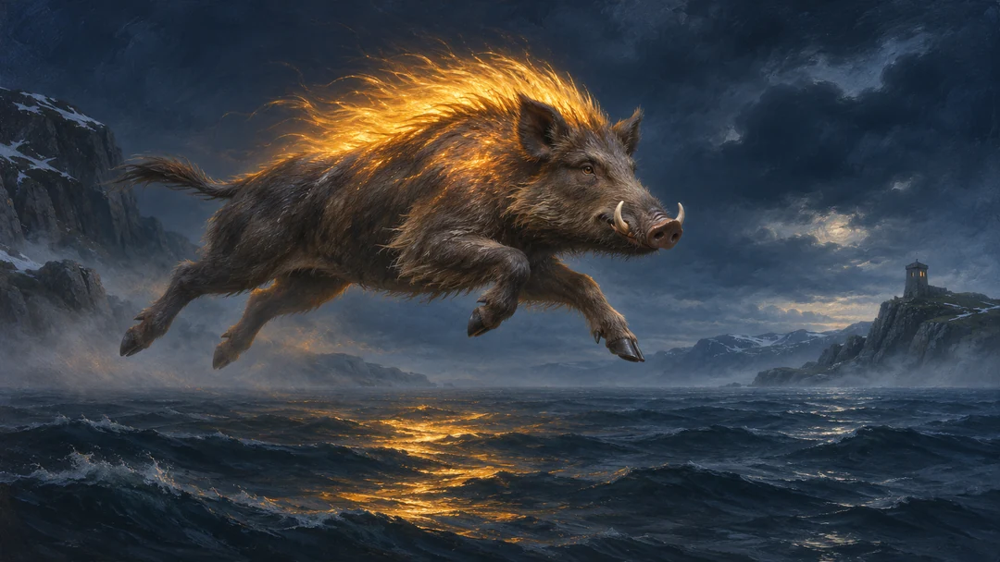
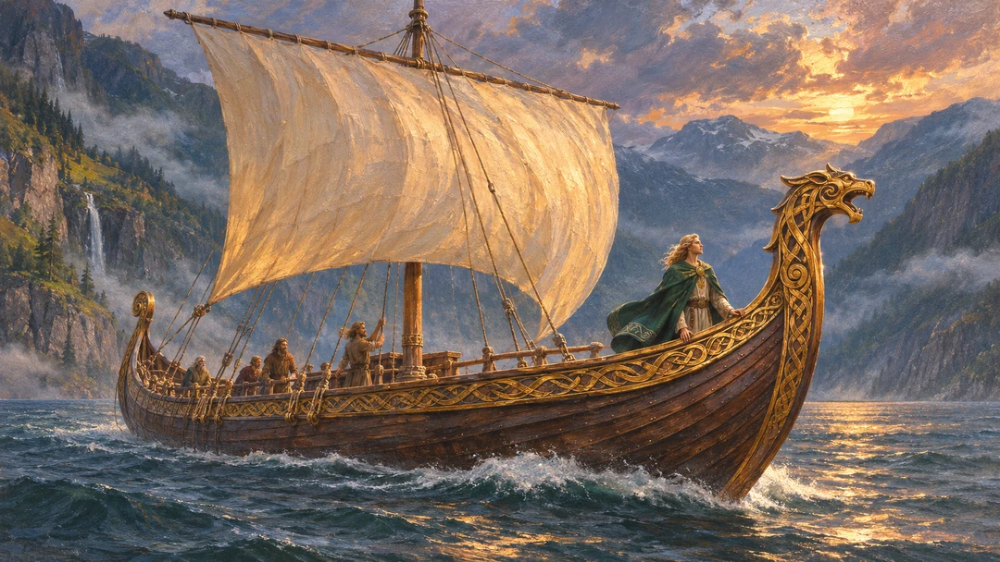

Chapter 1
DeutschIngobert and the Memory of a Saint

As you know I sign all my texts with Michael/Mufti999. I don't need to explain who Michael was or is. But my middle name is Ingo. I only recently discovered its divine meaning. Those who search for its origins will find themselves in an old Germanic name family: Ingo is an independent short form of names containing the element Ing-, to which Ingobert also belongs. This name leads to St. Ingbert in Saarland. There, the town's name commemorates a saint whose life story survives only in a few, late-recorded accounts. The history of this commemoration can be traced back to the Middle Ages and simultaneously leads to an older question: Who was Ing, whose name lives on in Ingo and Ingobert? [1] [2] [3]
A Name with an Old History
Ingobert combines the name element Ing- with Old High German beraht, meaning "bright" or "shining." This word also survives in other names as -bert or -brecht. The first element is related to the ancient divine name Ing, which corresponds to the Norse Yngvi. The actual meaning of this divine name remains uncertain. Ingo, as a short form, belongs to this larger family of Ing-names. Ingobert is one of them, and its saintly bearer provides a point of reference for further linguistic tracing. [2] [4] [5]
The oldest record comes from Trier.
Tradition places Ingobert in the time of Bishop Magnerich of Trier, who served in the second half of the 6th century. However, the crucial record was not written down until the early 11th century. Eberwin, Abbot of St. Martin in Trier and of Tholey, wrote a biography of Magnerich at that time. In it, Ingobert appears among pious men who were said to have been active in the forest region of the Vosagus. In medieval thought, this name for a region could extend beyond the present-day Vosges Mountains. Thus, Ingobert initially appears as part of a landscape of pious hermits, whose memory Eberwin preserved for his own time. [6] [7] [8]
More than four centuries separate the assumed lifetime of Magnerich from Eberwin's account. Moreover, the biography served a purpose: it honored Magnerich and the religious history of his community. The later Gesta Treverorum revived such accounts. This perpetuated the narrative without a second contemporary confirmation. As early as 1956, the historian Eugen Meyer cautioned against deriving an accurate history of the early medieval mission on the Saar from these later accounts. A historical figure may be behind the tradition; their individual deeds can hardly be reliably reconstructed from it. [9]
Later accounts offer different origin stories for this hermit. Sometimes Ingobert appears as an Irish itinerant monk, sometimes a man of Frankish nobility is suggested. However, an Irish origin cannot be inferred from the early account. As Tholey Abbey explains, Eberwin explicitly says that Columbanus came from Ireland, while leaving the origins of Ingobert and the other saints open. The idea of a group that traveled together from Ireland to the Saar region is thus a later embellishment of his story. [7] [10] [11]
The World of Hermits
The era in which Ingobert is placed is more clearly discernible than his person. Magnerich belonged to the ecclesiastical leadership of the Frankish kingdom and had connections to the Merovingian royal house. Gregory of Tours knew him personally. The Christian Church thus already possessed bishops and political connections, while religious conditions in the countryside could vary considerably. In this environment, we encounter people who gained religious authority through an unusually austere lifestyle and, in doing so, also came into conflict with the responsible bishops. [6] [12]
One such man was Wulfilaich, about whom Gregory of Tours recounts in detail. He had erected a pillar in the western part of the Trier diocese and endured even the winter cold upon it. A goddess, whom Gregory calls Diana, was still worshipped in his vicinity. Wulfilaich preached against her veneration and participated in the destruction of her statue. Eventually, bishops forced him to leave the column; Magnerich had it taken down. Gregory's account shows how fraught the relationship between local piety and ecclesiastical order could be. He describes Wulfilaich's story. For Ingobert, it provides a chronological context, not additional biographical details. [13] [12]
A Hermitage and the Landscape of His Tales
Local memory connects Ingobert with a hermitage. The area around the Holy Well near the Old Cemetery is suggested as a possible location. There, he is said to have lived in humble circumstances. The water of a spring and the proximity of a small dwelling create a vivid image of the hermit, one that lends itself well to being recounted. The spring makes the memory of a man about whom so little is known tangible in the landscape. The exact location of his actual dwelling cannot be determined from this today. [10] [14]
Other accounts place Ingobert in the vicinity of the Stiefelfelsen (Boot Rock) near St. Ingbert. The landscape is imbued with further tales. In one legend, the giant Kreuzmann lives here, abducting and devouring people; at the giant's table, elves are said to have danced. The proximity of these stories makes the location interesting for readers of legends and role-playing game authors. However, their shared connection to the landscape proves neither an encounter between Ingobert and the giant nor an earlier cult of the god Ing at this rock. [15] [16] [17]
This very fact offers an opportunity for later adaptation into fantasy: A place can support several narratives whose relationship to one another remains unclear. The inhabitants of a fictional city might venerate a saint, while hikers in the same forest tell an older legend. An adventure could revolve around the attempt to connect these traditions. Such a connection would be a deliberate invention for the game. The actual legends surrounding St. Ingbert provide motifs and settings for this, without yet dictating a common plot. [16]
How the Saint Became the City's Name
The settlement from which St. Ingbert originated first appears in a document in 888. At that time, it was called Lendelfingen; the Latin form handed down is Lantolvinga. This early mention of the place thus belongs to a different story of its name. Ingobert only emerges as the namesake in later written records. A long period of time lies between the memory of an early medieval hermit and the place named after him, and its individual stages can only be partially traced. [3] [14]
A form of the name referring to the saint is documented in 1174. The older name Lendelfingen remained in use alongside it for a long time. Here, the effect of veneration becomes apparent: The name of a religious point of reference could gradually become the name of an entire place. This tells us something about the people who used this name and about the significance they attributed to Ingobert. It neither assumes that he founded the settlement, nor does it reveal exactly when his local veneration began. [3]
Veneration and Canonization
A date for Ingobert's formal canonization cannot be determined from the available sources. His local veneration is primarily documented. No papal decree or dated episcopal decision is attested. His story thus belongs to the category of cases where a person's reputation as a saint can be traced, while the beginning of their veneration and the individual steps toward their ecclesiastical recognition remain unclear. [9] [14]
In the early Middle Ages, the veneration of saints often arose within a local community. A reputation for particular piety could lead people to venerate a deceased person as a role model and intercessor. Bishops oversaw such cults and could permit their liturgical celebration; occasionally, recognition was made visible through the elevation or translation of the relics. The centrally regulated papal process we know today only developed over the course of centuries. Therefore, an early medieval saint does not necessarily have a canonization date comparable to modern ones. [18] [19]
In Ingobert's case, tradition primarily bases his reputation as a saint on the image of a pious hermit. Eberwin counts him among the viri magnae sanctitatis, men of great holiness. This is an appreciation of his attributed way of life within a religious narrative. What specific deeds originally triggered this reputation remains unknown. A canonization based on specific, Church-verified miracles cannot be substantiated for him. The fact that his biography is now largely inaccessible to us does not diminish the significance that people in the Middle Ages ascribed to him. [9]
Therefore, the following can be stated chronologically: In the early 11th century, Ingobert already appears in a tradition of holy hermits. In 1174, his saintly name is evident in the place name Sancto Ingebrechto. These records show that his religious significance existed at that time; when it began remains unclear. October 22nd also marks his feast day in the calendar and is not a recorded date of a canonization. [8] [3] [14]
A Saint in the Present Day
The memory of Ingobert has also survived in the Church. In St. Ingbert, the Catholic parish of St. Ingobertus exists today; among its churches is the Old Church of St. Engelbert. Ingobert's feast day is celebrated on October 22nd. While the hermit's life story is only vaguely preserved, his influence can be directly recognized in such names and recurring days. Those who venerate him connect with a local memory that has been passed down through many generations. [20] [21] [14]
Outside of church services, the name lives on in the Ingobertus Festival. There has also been a struggle over his representation in public spaces. The city honors Elke Sonn for her efforts in having an Ingobertus sculpture re-erected. In 2019, she published the volume Ingobertus: From Pilgrim to Patron. It juxtaposes literary interpretations with contributions to the history of the veneration of saints. This makes it clear how the engagement with Ingobert continues to this day: people preserve the name, give it a visible image, and tell its story within the context of their own time. [22] [23] [24]
From Saint back to Ing
For the origin of my second given name, Ingobert thus remains a stage within a larger history of names. His name contains a component that is associated with the pre-Christian Ing. This linguistic connection leads to the next question: What has been handed down about this Ing? In the next article, the search leads from an Old English runic poem to the Norse Yngvi-Freyr. There we encounter considerably more detailed stories, including those of an extraordinary ship and a sword whose loss ultimately has fatal consequences. [4] [25] [26]
Chapter 2
DeutschIng and Freyr

An Ancient Divine Name and the Price of a Gift
The search for my middle name initially led me to Ingobert, the saint commemorated by St. Ingbert. However, his name contains a component whose history stretches back further: Ing. In Norse tradition, we encounter the related name Yngvi, which is also borne by the god Freyr. Research connects these names and their bearers. Following this trail leads through very diverse sources, from a Roman account to Germanic origin stories and the myths of medieval Iceland. [4] [25]
The Few Traces of the Early Ing
In the second chapter of his Germania, Tacitus recounts origin songs in which the Germanic peoples sang of an earth-born god, Tuisto, and his son, Mannus. Larger groups are said to have received their names from three of Mannus's sons. Tacitus calls those closest to the sea the Ingaevones. He does not provide the names of the three sons. The possible connection between the Ingaevones and Ing only becomes apparent through comparison with other traditions. Tacitus thus provides an early starting point for research, while the figure of Ing himself remains unnamed in his text. [27] [25]
An Old English runic poem provides a clearer picture. Its stanza on the rune Ing tells that Ing was first seen among the East Danes. Later, he departed across the water; a chariot followed. The Heardingas would have given the hero this name. It is a peculiarly concise scene: an arrival that is merely assumed, and a departure whose occasion is missing. The stanza also fails to explain precisely how the chariot and the sea voyage are connected. It apparently preserves a fragment of a narrative that its audience could recognize, and whose context is largely lost to us today. [28]
The reconstructed older name is often written as *Ingwaz. The asterisk, which precedes the form in linguistic notation, indicates a reconstruction. Ing and the Old Norse Yngvi belong to the same linguistic family. Thus, we possess a traceable naming origin, although the individual evidence for it is scattered over large temporal and spatial distances. The detailed stories about a wondrous ship and a self-fighting sword first appear in the Norse tradition concerning Freyr. Therefore, they belong there first when we ask about their origin. [4] [26]
Yngvi becomes the Lord
The explicit connection is found in the Ynglinga saga: Freyr was also called Yngvi, and the name of his descendants, the Ynglingar, is derived from this name. The saga belongs to the Heimskringla, which originated in the 13th century and is attributed to Snorri Sturluson. It recounts the gods as former rulers and links their stories to the origins of a royal dynasty. The equation of Yngvi and Freyr is clearly established here. At the same time, we recognize its purpose: It provides a ruling family with a divine ancestor. [29]
The name Freyr also fits this position. It is usually explained as "Lord" and traced back to an older form *Fraujaz. An originally honorific title may have evolved into the god's name. The religious historian Olof Sundqvist emphasizes that this interpretation aligns with Freyr's connection to political power. Those who limit him to the narrow role of "fertility god" easily overlook his function as ruler and peacemaker. The sources reveal a god whose favor also determines how well people live under a particular ruler. [30]
In the Norse pantheon, Freyr is the son of Njörðr and the brother of Freyja. He belongs to the Vanir, who are associated with the Aesir in the stories. Snorri’s Gylfaginning describes his power very concretely: Freyr commands rain and sunshine, and thus the bounty of the earth. He is to be invoked for good harvests and peace; human prosperity also falls within his domain. The word "fertility" takes on a broad meaning here. It refers to the conditions under which a community can sustain itself and survive. [26] [31]
This connection between bounty and peace raises a political question. What is a ruler worth if the sustenance collapses under his rule? In Freyr's world, expectations of divine favor and human leadership are closely intertwined. For a fantasy world, this is a rich starting point: A king could trace his claim back to Freyr and, precisely for that reason, find himself in a difficult position in the event of a crop failure. This would be an original narrative elaboration of a connection that Sundqvist examines in the historical sources. [30]
Uppsala and the Hope for a Good Year
An important account of the Swedish cult comes from Adam of Bremen. In the 11th century, he describes the sanctuary of Uppsala and mentions a deity there called Fricco, who is usually identified with Freyr. He attributes to Fricco the granting of peace and pleasure; sacrifices were said to have been offered to the god at weddings. Adam was a Christian author and did not visit Uppsala himself. His account conveys information through an outside religious perspective. Anders Hultgård shows why its potential historical accuracy must be taken just as seriously as its literary models and the difficulties of transmission. [32]
A small bronze from Rällinge in Sweden provides a vivid counterpoint to the discussion. It depicts a seated, naked man with a prominent phallus, a pointed headdress, and one hand on his beard. The Historical Museum in Stockholm interprets the figure as Freyr. Its physical form aligns with notions of procreative power and fertility associated with the god. The identification remains a scholarly one. Nevertheless, the piece helps to illustrate how powerfully a religious concept could be conveyed through a body and its posture. [33]
The Ynglinga saga recounts Freyr's connection to the prosperity of the land, extending even beyond his death. When he died, his people concealed his passing. They placed his body in a mound and continued to send tribute there. Because the prosperous years persisted, they later preserved his body and offered sacrifices to him for prosperity and peace. This episode is part of the literary history of the divine king. Its most compelling idea is the continued dependence: as long as the land prospers, the order that Freyr guarantees should not end, even with his death. [29]
Another connection is revealed in the Eddic poem Grímnismál. It mentions Álfheimr, the home of the elves, as a gift that Freyr received at his first tooth. The idea is both domestic and monstrous: a childhood event is linked to the gift of an entire divine landscape. For Freyr, this establishes a connection to the elves, the precise details of which the brief verse leaves open. Those who later develop Álfheimr into a fully elaborated kingdom with a court and established offices are already creatively expanding upon this suggestion. [34]
Gerðr and the Given-Away Sword
In the Eddic poem Skírnismál, Freyr takes his seat on Hliðskjálf. This is Odin’s high seat in Asgard. Snorri tells us that from it Odin can see the whole world. Freyr looks towards Jötunheim, the land of the giants, and there he sees Gerðr, the daughter of Gymir. Her sight captivates him so completely that he withdraws. His servant Skírnir learns the reason and is ordered to undertake the journey to her. In return, he demands Freyr's horse and his special sword, which can fight on its own. Freyr relinquishes both. Thus, even before his encounter with Gerðr, his desire has already cost him a weapon whose significance will extend far beyond this journey. [35] [34] [31]
Gerðr rejects Skírnir's offers: neither eleven golden apples nor a wondrous ring can sway her. This is followed by death threats and a curse that threatens her misery and exclusion from human society. Only after this escalation does she promise a meeting with Freyr after nine nights. The order is crucial for understanding the poem. Gerðr's agreement is the result of coercion. Skírnir acts as the mediator sent and equipped by Freyr; anyone who only recounts a successful courtship obscures the conflict at the heart of the poem. [35] [34]
In the Lokasenna, a disputational poem, Loki confronts Freyr with his decision. He accuses him of having bought Gymir's daughter with gold and even surrendered his sword in return. When Muspell's sons arrive, he will lack the weapon. This is the hurtful speech of an opponent within a scene, not a neutral summary of the wooing. It makes clear, however, that the tradition itself treats Freyr's loss as a vulnerable point. The god from whom people expect well-being remains bound by the consequences of his own actions. [34]
What's Missing in the End
Snorri continues this story. Freyr slays the giant Beli with a stag's antler after surrendering his sword. At Ragnarök, he finally encounters Surtr and falls. In the Gylfaginning, his death is explicitly linked to the missing sword. The former gift returns as a crucial deficiency. Yet Freyr remains capable of action and faces the battle. It is precisely this connection between divine power and an irreversible decision that makes his story so interesting to me. [31]
Freyr's Gifts as the Starting Point for Further Stories
Freyr's possessions also include Skíðblaðnir. The Grímnismál names Ívaldi's sons as its builders. Snorri describes a ship that can carry the gods and their equipment, catches favorable winds while sailing, and can then be folded up and stored in a bag. Thus, its very construction already contains an entire adventure idea: the possibility of a great voyage can be carried along inconspicuously. For a game world, the consequences would be far-reaching. Even the question of who gains access to this ship could become more important than any single sea battle. [34] [31]
Gullinbursti, the boar with the golden bristles, is created in a competition among dwarves. Brokkr and his brother craft it as one of their gifts; Freyr receives the animal. It can walk through air and water, and its golden bristles glow even in the dark. Here, the wonder is a living companion. In a later role-playing game adaptation, the boar therefore deserves its own distinct character and relationship with its master. Its origin in the workshop also offers the opportunity to inquire into the demands of its creators. [31] [36]
The origin of my name thus leads to a figure whose stories are widely divergent: Ing travels across the sea in a few verses; Yngvi-Freyr, in more elaborate Norse texts, represents a good life and orderly rule. The connection of the names allows these accounts to speak to one another without erasing their differences. In the end, I am particularly preoccupied with the sword. A god gives something away because another desire is more important to him at the moment. Much later, what is missing determines his end. For me, this is where the next story begins. [28] [29] [34]
Chapter 3
DeutschFreyr’s Lost Sword

Possession, Renunciation, and the Consequences of a Gift
Freyr gives his messenger a sword that can fight on its own. With this, he enables the wooing of Gerðr. The consequences of this gift extend to the very end of the pantheon: when Freyr confronts Surtr, he lacks the weapon. For a story about magical objects, this is an unusual starting point. The crucial question is what remains of a previous decision when its immediate purpose has long since been fulfilled. [31]
A Sword That Fights on Its Own
In the Skírnismál, Skírnir demands a horse and the sword that fights against the race of giants for his journey. Freyr grants him both, but adds a condition regarding the sword: the one who possesses or wields it must be horskr. This means a wise or insightful bearer. Edward Pettit translates this as "wise." This does not provide a clear test of moral worthiness. The weapon demands judgment; the poem does not explain which specific action demonstrates this. [37] [38]
We also learn something about its appearance. Skírnir describes the blade as narrow and decorated; the Old Norse málfáan could refer to a patterned surface or colored markings. He explicitly holds it in his hand. This indicates independent combat, but not free flight. These passages also make no mention of a smith, a special metal, or guaranteed indestructibility. Even a certain superiority over any conceivable opponent would be an expansion of the text. [37]
The condition of prudence takes on a bitter aftertaste through Freyr's decision. Alicia Maddalena reads the passing on of the weapon as ironic: Freyr possesses a weapon for a wise owner and gives it away under the influence of his desire. This is a scholarly interpretation, not an explicitly stated moral of the poem. However, it draws attention to a question that lends itself well to being posed at the gaming table: Can a decision appear reasonable in the moment and yet still destroy one's own future? [38]
The Wooing of Gerðr
Freyr saw Gerðr from the high seat of Hliðskjálf and longed for her. Skírnir undertook the journey to the land of the giants. The sword was presented to this messenger. In the narrative, it was neither a direct handover to Gerðr nor an explicitly agreed-upon loan. In Snorri's version, Skírnir demanded the weapon as a condition for carrying out the mission. [35] [31]
Gerðr rejected the offered golden apples and the precious ring. Even Skírnir's threat to behead her initially failed to persuade her. This was followed by threats against her father and a lengthy cursing speech, which painted a picture of a life filled with suffering and exclusion. Only then did she agree to the meeting. Carolyne Larrington has shown how much this story changes when read from Gerðr's perspective: A woman is to submit to the desire of a man she initially explicitly rejects. [35] [39]
The curse is part of Skírnir's method. It cannot simply be inferred from this that the blade possesses another ability. Besides the sword, the poem mentions a gambanteinn, a magical branch or staff, and the carving of runes. How these objects and actions are related is open to interpretation. Therefore, a property like “compels love” should not be included in an artifact description as a traditional sword power. [35] [25]
What Became of the Meeting
Gerðr designated the grove Barri as the meeting place and set a deadline of nine nights. Skírnir returned and delivered the promise to Freyr. Freyr lamented how difficult even a few nights of waiting were for him. The song ends there. The meeting itself, a wedding feast, or a conversation between the two is not recounted in the Skírnismál. [37]
However, other texts confirm the union. Hyndluljóð 30 explicitly states that Freyr married Gerðr. The Ynglinga saga names Gerðr as his wife and Fjölnir as their son. Thus, the tradition extends beyond a promised meeting: it acknowledges a marriage and a shared offspring. We learn nothing about Gerðr's feelings during this marriage or about the couple's daily life at these points. [37] [29]
This evidence does not permit a retrospectively reconciled love story. Larrington points out that Snorri's shorter account omits the threats and the curse and normalizes the union through marriage and child. Furthermore, the texts should not be pieced together to form a seamless biography: Ynglinga saga tells of Freyr as a ruler who dies of an illness. It treats the material differently than the narrative of his death at Ragnarök. [39] [29]
The last sure trace of the sword
What became of the weapon can only be answered up to a certain point: Freyr gives it to Skírnir, and Skírnir wields it when he meets Gerðr. Another clearly narrated transfer is missing from the central texts. There is no established story there of Gerðr receiving it, her father storing it, or Skírnir passing it on to a later hero. There is also no narrative return to Freyr. [35] [25]
Loki's mockery in the Lokasenna provides an additional trace. He accuses Freyr of buying Gymir's daughter with gold and giving up his sword in the process. At the same time he reminds him of the coming attack by the sons of Múspell. The recipient of the sword is not named in this stanza. In addition, Gerðr rejects the treasures offered in the Skírnismál. Loki's diatribe is therefore not a precise purchase contract that could be used to fill in the missing stages of the weapon's biography. [35] [25]
The idea that Freyr is ultimately killed with his own sword also goes beyond the clear source findings. The Völuspá describes Surtr with a glowing weapon and then Freyr's fight against him. She does not declare this weapon to be Freyr's former property. An identification may be an attractive interpretation or a powerful twist to one's own narrative. It cannot be specified as a secured station for the sword. [35] [31]
Names and Additional Traditions
In the passages relevant to this story, Freyr's sword remains nameless. The common name Sumarbrandr or Sumarbrander should therefore not be used as its Eddic proper name without additional historical evidence. A clearly documented modern usage is Sumarbrander in Rick Riordan's The Sword of Summer. This modern usage confirms it; however, it does not in itself prove who first coined the name. [35] [31] [40]
Lævateinn leads to another enigmatic weapon. In Fjölsvinnsmál, a weapon of this name is mentioned, crafted with runes by Loftr and found under nine clasps at Sinmara's house. The passage in question deals with how the rooster Víðópnir could be killed. It names neither Freyr nor Skírnir as its owner. Therefore, anyone who equates Lævateinn with Freyr's sword is connecting traditions whose identity the text itself does not confirm. [35]
For further research, Edward Pettit's The Waning Sword is recommended. Pettit examines possible connections between Skírnir's wooing of Gerðr on Freyr's behalf and Beowulf's encounter with Grendel's mother, as well as the respective weapons. His comparisons reveal interesting motifs and possible earlier connections. However, they are reconstructions from scattered texts, not a rediscovered narrative that fully clarifies the whereabouts of Freyr's sword. [25]
Death comes later
First, Freyr can replace the missing weapon. Snorri says that he kills Beli with a deer antler. Renunciation does not mean immediate defenselessness. Only in the fight against Surtr does the former gift become fatal: Snorri explicitly attributes Freyr's downfall to the fact that he lacks the good sword that he gave Skírnir. However, this does not explicitly promise a certain victory with the sword. [31]
It is precisely the time gap that contributes to the tragedy. A waiver can appear to have no consequences for a long time; even subsequent success can subsequently confirm the decision. Then a situation arises in which the lost opportunity would have been decisive. A fixed rule of fate can be developed from this for the role-playing game. However, the fact that every former owner must die after sale, gift or loss is our extension. The sources do not formulate such a general curse. [31] [34]
Stormbringer and Mournblade: When the Weapon Controls the Wielder
Michael Moorcock's Stormbringer and Mournblade also fight with a will of their own. In Elric of Melniboné, Elric wields Stormbringer, and his cousin Yyrkoon wields Mournblade. During the duel, the swords seem to wage their own battle. Their wielders are involved, but can themselves become the weapons in this fight. The line between a wielded weapon and a power that controls its owner becomes blurred. [41] [42]
When considering a powerful wielder, some clarification is necessary. Elric possesses considerable magical power, but is physically weak and initially sustains himself through special means. Stormbringer provides him with the strength his body lacks. The sword, therefore, does not require exceptional physical strength. It is precisely his assistance that makes the bond so dangerous: Whoever derives their power from the weapon loses more than just a particularly valuable item through its separation. [43] [42]
This power stems from stolen lives and consumed souls. Moorcock himself explains Stormbringer's hunger for souls by referring to Elric's sustenance and their symbiotic relationship. Mournblade belongs to the same threatening constellation: In a duel, Elric fears that his soul will be drawn into it and his power will benefit Yyrkoon. The price of power is thus initially paid by the victims. The wielder profits from this and simultaneously enters into a relationship whose demands become increasingly difficult to control. [41] [44]
Even during his encounter with the two black swords, Elric attempts to resist this will. He holds back Stormbringer when the blade is about to kill Yyrkoon. For comparison, this scene is more fruitful than simply "The sword fights alone": The wielder must assert himself against a weapon that simultaneously aids him. Whether his own decision remains decisive becomes the conflict within the fight. [41]
Stormbringer's danger is ultimately realized in Elric himself. At the end of Stormbringer, he throws the weapon away; it rises from the ground and pierces him. Afterward, it assumes a demonic form. Here, it acts even without a guiding hand. This final scene explicitly belongs to Stormbringer and should not be attributed to both blades indiscriminately. It also reveals more than just the punishment of a careless user: the weapon has its own nature and its own intentions. [45] [42] [46]
This makes the comparison with Freyr more precise. Elric's story is essentially about a dependence that grows with the use of the weapon. Freyr's story derives its tragic consequence from the absence of the weapon. In Moorcock's work, the relationship between wielder and sword itself becomes dangerous; in Freyr's, a previous disposition of one's own possessions catches up with the god. Both themes lend themselves to tragic weapons, but require different decisions at the gaming table. This is my comparative reading. It does not establish a direct literary influence of Freyr’s story on Moorcock. [31] [41] [45]
At the table · Peace Bought (PDF)
Chapter 4
DeutschGullinbursti, a Living Treasure

Freyr has a boar whose golden bristles light up the dark. He can run through air and water. The dwarfs made him and gave him to the god as a treasure. Gullinbursti is a different kind of gift from the sword in the previous chapter. He opens up routes his companions could never take on their own, and he’s hard to miss when they travel with him. For a tabletop game, that’s the start of a story about what it’s like to live with a creature that can do such things. [31]
The boar from the forge
Gullinbursti means roughly “gold-bristle” or “the golden-bristled one.” His name picks out the first thing you’d notice about him. The form Gullinbusti also appears in the tradition. Snorri gives Freyr’s boar another name, Slíðrugtanni, which means something like “the one with the fearsome tusks.” Both names refer to the same animal in his account. [31] [47]
The story of his making gives him golden bristles and a golden mane. A boar comes out of the forge, and the story goes on to tell us what he can do. He owes his existence to skilled smiths and has a place among the living creatures of the gods’ world. A body cast entirely in metal, with machinery inside, would be a modern addition. [31]
It starts when Loki cuts off Sif’s hair. Thor threatens him, and Loki has to find a replacement. The sons of Ívaldi make the golden hair, along with Odin’s spear Gungnir and Freyr’s ship Skíðblaðnir. Loki then wagers his head that Brokkr’s brother can’t make anything to match those treasures. The manuscripts give the second smith two names, Sindri and Eitri. Each names the brother who works at the forge in this episode. [31] [47]
Brokkr works the bellows while his brother puts a pigskin in the forge. A fly lands on Brokkr’s hand and bites him. He keeps pumping. When the work is done, the golden-bristled boar comes out of the fire. The brothers go on to make the ring Draupnir and Thor’s hammer Mjöllnir. It takes a bite to the eyelid, while they’re working on the hammer, for Brokkr to let the bellows falter. That is how the last of the three treasures gets its famously short handle. The passage calls the creature a fly and leaves its identity unstated. [31]
Brokkr presents the boar to Freyr in front of the gods and tells them what he can do. The hammer wins because the gods judge it their best defence against the frost giants. Freyr still receives a gift worthy of a god. The contest brings out what each treasure can do. For the boar, Brokkr singles out the speed of his journeys and the light of his bristles. [31] [48]
Travel by his own light
Gullinbursti can run through air and water by day or night. In Anthony Faulkes’s translation of the Uppsala Edda, he can outrun any horse. A rider can take routes that would ordinarily be closed to them. Anyone adapting the story can decide how high he flies, how long he can travel without rest and how much he can carry. [48] [47]
The bristles shine brightly enough for there to be light wherever Gullinbursti goes, even in the middle of the night. The longer account mentions dark places as well. You can see by his light as you travel. A fixed radius or an effect on magical darkness would be a rule to add for a game. [47] [31]
Put that light and speed together and a journey changes. You can reach a dark stretch of coast or cross a river that would have stopped you on foot. Anyone watching might see you coming. That’s the part I most want to play with. The very thing that helps you find your way can tell someone else where you’ve been. His light alone can get him and his companions into trouble.
One journey takes Freyr to Baldr’s funeral pyre. In Úlfr Uggason’s Húsdrápa, he rides the golden-bristled boar at the head of the procession. This is a public, solemn occasion. The boar is part of what makes Freyr recognisable. Snorri quotes the verse among the poetic names and descriptions for Freyr, where he also gives Gullinbursti’s other name, Slíðrugtanni. [49] [47]
In Gylfaginning, Freyr arrives in a cart with the boar harnessed to it. Both pictures survive, so an artist or game designer can draw on either the mounted god or the boar pulling his cart. The animal Snorri later has led onto the pyre is Baldr’s own horse. [31] [48]
Other boars, oaths and an open ending
Gullinbursti is the first of a family of mythic boars I’ll be writing about in this series. In Hyndluljóð, Hildisvíni is Freyja’s golden-bristled companion. Sæhrímnir feeds the einherjar in Valhalla. Snorri says that Sæhrímnir is boiled every day and whole again by evening. [37] [31]
“Family” here is our way of grouping figures with something in common. The sources leave their ancestry unstated. Slíðrugtanni is another name for Gullinbursti. The next chapter follows Hildisvíni. Sæhrímnir and the other boars are stories for another time. Gullinbursti’s gifts are speed and light. It’s Sæhrímnir who is made whole again every evening. [31]
Boars also turn up as emblems outside the stories about the gods. A boar stands on top of the Anglo-Saxon helmet from Benty Grange, which Sheffield Museums dates to around 650. Old Norse texts associate boar imagery with battle and rank, among other things. That gives Gullinbursti some company. To identify the boar on a particular weapon or piece of armour with a named god, we would need evidence beyond the image itself. [50] [51]
Version H of Hervarar saga ok Heiðreks makes an explicit connection with Freyr. King Heiðrekr is to give the god the largest boar available. On Yule Eve the animal is led into the hall. Men lay their hands on its bristles and make solemn vows before witnesses. The boar in this account has no personal name, and the saga manuscripts vary in how they describe the custom. [52] [51]
A passage in Helgakviða Hjǫrvarðssonar shows how badly such an oath can go. During the feast, Heðinn swears on a boar that he will win Sváva, the woman his brother Helgi loves. He regrets it at once. Freyr and Gullinbursti are absent from the episode. What interests me about it is the part the animal plays. In a room full of witnesses, a rash thought becomes a promise. Giving a boar the power to detect lies or punish oath-breakers would be a further invention for a game. [37]
At Ragnarök, Freyr falls fighting Surtr. Snorri leaves the boar out of that account and out of his description of the renewed world. Gullinbursti’s fate is open. [31]
That’s a place to start a campaign of your own. A boar whose master has fallen might follow the same routes for centuries. He might wait in a place where no one will ever come to meet him again. The people who find him would have to piece together his past from what he does. I like the idea that the old owners of the gods’ treasures still have a place in their stories, even after those treasures come into human hands.
There’s a comparison in the Odyssey. Gold and silver dogs guard the palace of Alcinous. Hephaestus made them, and Homer calls them immortal and ageless. Like Gullinbursti, they are animals made by a gifted smith for a purpose. The dogs watch over a place. Freyr’s boar takes him on journeys no ordinary mount could make. The resemblance is a comparison of motifs. A direct link between the traditions would take further evidence. [53]
A creature made for a job can have a life of its own. How much freedom it has depends on the story. With Gullinbursti, what interests me is how a gift that can be handed over becomes a companion someone has to live with. A bill of sale can tell you who claims to own him. Gullinbursti has his own say in what happens next.
At the table · Hadrvik under Siege (PDF)
Chapter 5
DeutschHildisvíni and the Golden Deer

An essay on animal transformations
Freyja is the sister of Freyr, the god we encountered earlier in this series through the names Ing and Ingo. Snorri names both as children of Njörðr; in the Ynglinga saga, Freyr is also called Yngvi. Ingo is a personal name belonging to the group of names formed with Ing-. Following that trail led us to Freyr’s sword and his golden boar. Now his sister introduces us to another boar, one that may conceal a human beneath its bristles. [54] [55] [56]
An Argument over a Boar
In Hyndluljóð, Freyja asks the giantess Hyndla to ride with her. Hyndla has a wolf; Freyja has brought a boar. But the two begin to quarrel. Hyndla accuses the goddess of bringing her companion Óttarr along. Freyja denies it: the creature before them is Hildisvíni, the boar with golden bristles made for her by the dwarfs Dáinn and Nabbi. We hear how he was created in the middle of an argument about who is actually accompanying the goddess. Stanza numbering in this essay follows Edward Pettit’s edition. [35] [37]
Hildisvíni means roughly “battle boar.” The poem does not, however, describe him fighting. Nor does it give him the extraordinary powers of travel associated with Gullinbursti. Instead, the exchange makes us question Freyja’s account. Is her companion really the work of two dwarfs? Or has Hyndla recognized the human Freyja wants to hide from her? [35] [57]
Óttarr Needs to Know His Past
Young Óttarr is in a contest with Angantýr over his ancestry and his paternal inheritance. Freyja wants to help him. She explains why: he has worshiped her, building a stone altar and reddening it with the blood of cattle. Now Hyndla must name the ancient lineages. The giantess has the knowledge Óttarr lacks. When she begins to speak, she addresses him directly, naming his father Innsteinn and further ancestors. The exact terms of the wager are not fully explained. [35] [37]
What follows can feel like a wearying succession of names. For Óttarr, his inheritance depends on them. He needs to know his ancestry and be able to recite what he has heard. Freyja gives him access to Hyndla’s knowledge. Whether the giantess likes him is, for the moment, a secondary concern. She knows the names he needs. [37] [34]
Beneath the Bristles
Toward the end, the connection between Óttarr and the boar becomes clearer. In Edward Pettit’s edition, Freyja asks for a drink to preserve her boar’s memory so that he can later recite his ancestry to Angantýr. Pettit therefore identifies the animal as Óttarr in a transformed state. Other editions read “guest” at this point. Taken together with Hyndla’s earlier accusation, this gives us strong grounds for seeing the young man beneath the bristles. [37] [35]
We are not told how Óttarr took this form. The poem describes neither a transformation ritual nor his return to a human body. The claim about the dwarfs is left unresolved as well. A boar’s skin that Óttarr puts on would make an appealing explanation in a retelling. It is not in the surviving text. [34] [37]
A Drink to Preserve Memory
The requested drink is meant to preserve Óttarr’s memory. On the third morning, he must be able to recite the genealogy he has heard when he and Angantýr discuss their ancestry. In the poem, the drink does not reverse a transformation. Nor does the surviving story give a deadline after which someone must remain a boar forever. In the adventure below, we deliberately give the drink that new purpose. [37] [34]
By the end, the quarrel has become threatening. The “fire passage” means the closing stanzas in which fire is threatened and the earth is described as burning. In a common reading, followed by Henry Adams Bellows, Freyja threatens to surround Hyndla with flames to prevent her escape. Pettit leaves open which of the two women speaks the threat. Hyndla’s ensuing curse is clear: Óttarr is to receive a poisoned drink that brings ill fortune. Freyja rejects the curse and calls on the gods to protect him. [37] [34]
After the Quarrel
The action ends with Freyja’s reply. We do not follow Óttarr to the resolution of his inheritance dispute or back into his everyday life. Whether he wins, and what happens to him afterward, remains unknown. The same is true of Hyndla. The poem describes the threat of fire, but does not say that she subsequently burns to death. It offers neither a reconciliation nor an account of her return home. [37] [34]
Other stories tell us more about Freyja, but they do not continue this encounter. Snorri relates that her husband Óðr travels far away. She searches for him among foreign peoples and weeps tears of red gold. These accounts do not form an unbroken life story. Even Snorri’s account of Ragnarök leaves Freyja’s individual fate unspecified: it explicitly describes neither her death nor her survival of the catastrophe. [54]
The Golden Deer in the Rāmāyaṇa
The story of the golden deer takes us to India. It appears in the Rāmāyaṇa, an ancient Sanskrit epic traditionally attributed to the poet Vālmīki. At its center are the prince Rāma, his wife Sītā, and his brother Lakṣmaṇa. During their exile, they live in the forest. One day, an animal appears that is too beautiful to be ordinary. [58]
Behind this shape is Mārīca, a Rākṣasa, a demonic being from Indian tradition. He takes the form of a deer whose body gleams with gold and silver and whose other features are compared to precious stones. Near the hermitage, he catches Sītā’s attention. The reader already knows his true identity and understands that this beauty is a deception. [59]
Mārīca has accepted the task unwillingly. Rāvaṇa wants to abduct Sītā and needs someone to lure Rāma away. When Mārīca resists, Rāvaṇa threatens to kill him. Mārīca, in turn, fears that he will not survive an encounter with Rāma. He assumes the deer’s form knowing that the plan may cost him his life. [59]
Sītā wants to possess the deer alive and later show it at the palace. If it cannot be caught, she wants its hide. Lakṣmaṇa distrusts the apparition and suggests that Mārīca may be behind it. Rāma hears the warning but decides to pursue the animal anyway. If it really is Mārīca, he considers killing him justified by his earlier acts of violence. The creature does not deceive everyone equally. Even recognizing the danger does not prevent the hunt. [59]
The Hunt Clears the Way
Mārīca appears between the trees, lets Rāma approach, and slips away again. He leads him far from the hermitage. Eventually, Rāma’s arrow strikes him a fatal wound. As he dies, he calls out to Sītā and Lakṣmaṇa in Rāma’s voice, then his Rākṣasa form becomes visible. Mārīca dies there in the forest. His last cry reaches those left behind and carries the deception further. [59]
Lakṣmaṇa believes the cry is a trick. After a bitter argument with the desperate Sītā, he nevertheless leaves her to look for his brother. Rāvaṇa now approaches disguised as an ascetic and abducts Sītā by force. The decoy has done its work. The two men who could have protected her are gone. [59]
How the Story Continues
Rāma and Lakṣmaṇa set out to find Sītā. Their ally Hanumān eventually discovers her in a grove on Laṅkā, guarded by Rāvaṇa’s followers. An army of their allies builds a bridge across the sea. The brothers reach the island, and after fierce fighting, Rāma kills Rāvaṇa. Mārīca’s deception made the abduction possible, but it could not save the abductor from this end. The chapter numbering here and in the conclusion that follows is that of Hari Prasad Shastri’s translation. [60]
For Sītā, rescue does not end her suffering. Rāma rejects her publicly, and she has a funeral pyre built to prove her innocence. She steps into the flames. The fire god Agni brings her out unharmed and testifies to her faithfulness. Rāma accepts her again. Together, they return to Ayodhyā, where he is crowned king. This homecoming concludes the Yuddhakāṇḍa, the Book of War. [60]
The seventh book, the Uttarakāṇḍa, is generally regarded by scholars as a later addition to the older core of the story. It brings the narrative to a more bitter end. Fearing the gossip of his subjects, Rāma repudiates Sītā even though he knows she is innocent. She gives birth to the twins Lava and Kuśa at Vālmīki’s hermitage. Years later, she is asked to affirm her faithfulness once more before an assembly. Sītā asks the earth to receive her. The earth goddess appears, takes her in, and Sītā vanishes into the ground. [58] [60]
Lakṣmaṇa’s end also belongs to this final book. Death, in person, visits Rāma for a private conversation. Rāma promises to kill anyone who overhears it and places his brother at the door. Then the sage Durvāsas demands admission. If he is turned away, he threatens to curse the kingdom and Rāma’s family. Lakṣmaṇa interrupts the conversation to protect the others. Rāma banishes him; for a person of honor, the text explains, banishment is equivalent to death. Lakṣmaṇa goes to the Sarayū, enters meditation, and is carried bodily to heaven by Indra, king of the gods. [60]
Rāma then prepares for his own departure. He appoints his sons as rulers and leads his followers to the Sarayū. As he steps into the water, Brahmā greets him as Viṣṇu. Rāma returns to his divine existence. The story thus reaches from the deceptive deer in the forest to its principal characters’ departure from the human world. [60]
A Borrowed Form and Its Purpose
With Hildisvíni, we wonder who is hiding beneath the golden bristles. With the deer, we know the shapeshifter and watch his plan succeed. In both stories, the animal form changes the relationship with the people or gods who encounter it. Freyja can conceal someone under her protection; Mārīca can draw a pursuer away from a place. This does not establish a common origin for the two stories.
For a roleplaying adventure, the transformed hero’s predicament is especially appealing. They open a path for their companions by making themselves desirable prey. In doing so, they may stray so far that no one can help them immediately. If the patron also keeps the potion that reverses the transformation, a useful arrangement becomes a means of control. What do the characters do when they no longer trust the man who holds the means to restore their companion?
At the table · Eight Hours as a Golden Boar (PDF)
Chapter 6
DeutschSkíðblaðnir and the Ships of the Gods

Among Freyr’s treasures, Skíðblaðnir takes its place beside the lost sword and the golden boar. The Eddic poem Grímnismál already calls it the best of all ships. That description raises expectations: surely anyone who owned such a vessel would make extraordinary voyages. Yet the surviving texts tell us chiefly where it came from and what it could do. We are largely left to imagine its journeys for ourselves. [34]
Freyr and the dwarves’ gift
Freyr is the son of Njörðr and the brother of Freyja. By birth, he belongs to the Vanir. Snorri associates him with rain, sunshine and the earth’s produce; people should call upon him for good harvests and peace. After our excursion into the story of Freyja’s boar, we return to this god. [31]
The ship’s story begins with Loki cutting off Sif’s hair. When Thor threatens him, Loki promises to replace it. The sons of Ívaldi then make Sif’s golden hair, Odin’s spear Gungnir and Skíðblaðnir. Only afterwards does Loki wager his head that Brokkr’s brother cannot make treasures to match them. Brodeur’s translation calls Brokkr’s brother Sindri. Other editions give Eitri. This second workshop produces Gullinbursti, Draupnir and Mjölnir. When the gifts are presented, Freyr receives the ship from Loki and the boar from Brokkr. [31]
The ship and the boar thus come to Freyr within the same story, but from different workshops. Mjölnir wins the contest. Loki avoids beheading by arguing that he never wagered his neck; Brokkr eventually sews his lips together. Freyr keeps his gifts. He neither won Skíðblaðnir by conquest nor commissioned it himself. [31]
The shorter account in Grímnismál likewise names the sons of Ívaldi as the builders and Freyr as the recipient. The following stanza calls Yggdrasil the best of trees, Sleipnir the best of horses and Skíðblaðnir the best of ships. Freyr’s gift thus appears alongside the world tree, whose branches stretch across the entire world, and Odin’s eight-legged horse. What those two represent among their own kind, Skíðblaðnir represents among ships. To our eyes, a work of the dwarves earns a place of honour among the great wonders of the gods’ world. For a ship that Freyr can fold up and carry in a pouch, that is an almost unimaginable distinction. [34] [31]
Could all the Æsir really fit aboard?
Yes. Gylfaginning 43 explicitly says that Skíðblaðnir has room for all the Æsir with their weapons and war gear. The Old Norse phrase is “allir æsir”. Snorri gives no number of seats, length or maximum load. [54]
For the Vanir, the answer depends on how Snorri uses these names. He counts Njörðr among the Æsir while also explaining that he comes from Vanaheim. Freyr, too, belongs to his community of gods. The Ynglinga saga tells how father and son come to the other side as hostages after the war between the Æsir and the Vanir. Depending on the context, “Æsir” can therefore mean more than descent from a single divine family. [31] [55]
The natural reading is that this wording does not exclude Freyr and Njörðr from their own divine ship. It does not, however, add a separate assurance that every member of the Vanir, or every inhabitant of Vanaheim, could come aboard. No passenger list survives. For a retelling, “the assembled gods and their equipment” is a useful description. A passenger capacity that expands without limit would already be an addition to the text. [31] [55]
Wind in the sail and a ship in a pouch
As soon as its sail is raised, Skíðblaðnir has a favourable wind for its intended voyage. When it is not needed, it can be folded like a cloth and carried in a pouch. Snorri stresses its many parts and the skill of its construction. He explicitly names Naglfar as the larger ship; Skíðblaðnir holds the distinction of being the best. Naglfar is the ship made from the nails of the dead on which enemies of the gods approach at Ragnarök. [54]
Reliable wind and portability make a particularly useful combination for a traveller. You can reach a place on foot and become a seafarer only when you arrive. A mountain range between two bodies of water becomes less of an obstacle. This is a practical consequence of the ship’s described abilities, rather than an episode from a surviving story about Freyr. [61]
The cited Edda passages do not give the ship the ability to fly or to travel across solid ground under its own power. In the contest between the dwarves, it is Gullinbursti who receives the ability to move through air and water. When comparing the two gifts, we should not transfer that power to the ship. Skíðblaðnir can make a land crossing possible because it can be carried. [54] [31]
What was the ship meant for?
Its capacity to carry armed gods suggests the transport of a divine host. Yet no particular campaign is associated with it. Nor are we told of a specific commission for which the dwarves built Skíðblaðnir. It is all the more remarkable, then, that the Edda introduces such a powerful artefact, describes its abilities and declares it the best of all ships without telling a single self-contained story of one of its voyages. The Ynglinga saga does mention Odin travelling across great seas, but it develops no such adventure either. This leaves exciting possibilities for writers and gamemasters. They can send Freyr and his companions to unknown shores, lend the ship for a peace mission, or bring aboard people whose aims conflict. The tradition gives them an extraordinary ship; they can shape its untold voyages themselves. [34] [54] [31] [55]
A Vanir god’s connection with a ship is easy to understand: Freyr’s father, Njörðr, is associated with wind and seafaring. That alone does not fully explain the artefact. Richard Perkins is cautious about attributing a power over wind to Freyr himself. Joseph S. Hopkins and Haukur Þorgeirsson, in turn, warn against simply treating Skíðblaðnir as a ship of the dead or using it as a direct explanation for ship burials. The literary description makes no such connection. [61] [62]
When Odin owns the ship
The Ynglinga saga assigns the ship to a different owner. Here, Skíðblaðnir belongs to Odin. He sails it across great seas and can likewise roll it up like a cloth. The passage lists Odin’s extraordinary arts; it does not describe a particular voyage with a destination and a sequence of adventures. Nor does it tell a story in which Freyr hands the ship over to Odin. [55]
For this series, Freyr remains the owner, following the Edda accounts. The account naming Odin can stand alongside it. If we joined the two by inventing a gift from Freyr to Odin, we would be adding a story whose plausibility came from our own telling. With an object that can be pocketed and passed from one person to another, that addition could easily go unnoticed. [61]
What happened to Skíðblaðnir?
These texts give the ship no explicit ending. At Ragnarök, Freyr falls in battle against Surtr. Snorri mentions the missing sword, but says nothing of Skíðblaðnir. Neither its destruction nor its survival after the catastrophe receives a story of its own. [31]
That leaves room for a continuation. The folded ship might have been stored somewhere, lent out or lost. Each possibility would be our own extension of the story. The surviving account gives us no place where it must be found, and does not require us to imagine a wreck on the seabed.
The ships of the Phaeacians
A close parallel appears in the Greek Odyssey. King Alcinous explains that the ships of the Phaeacians need neither helmsmen nor steering oars like other ships. They know their passengers’ intentions and the cities and countries they are to visit. Here, the ships’ ability to find their own way is explicit. They still carry human crews: fifty-two young men are chosen for Odysseus’ voyage, and the account describes them rowing. [63]
One of these ships carries the sleeping Odysseus to Ithaca. His escorts leave him ashore with his gifts and turn for home. Just before they reach Scheria, Poseidon turns their ship to stone and fixes it to the seabed, punishing them for the help they gave Odysseus. This happens to the returning vessel, not the whole fleet. Alcinous recognises the fulfilment of an old warning and resolves to stop sending strangers home aboard his ships. [63]
The ship’s superior capabilities offer its owners no protection from a god. This gives us a useful point of comparison with Skíðblaðnir: a reliable passage between two coasts can affect political and divine interests. The miracle solves the problems of the crossing; it does not decide whether someone will allow that crossing to take place. [63] [54]
Manannán’s Wave-Sweeper
Irish tradition also has a boat that finds its own way to a named destination. In Lady Gregory’s retelling, Gods and Fighting Men, it is called Scuabtuinne, the “Wave-Sweeper”, and belongs to Manannán. Lugh lends it to the three sons of Tuireann. They have killed his father, Cian, and must complete a formidable series of tasks in atonement. When they command the boat to take them to the garden in the east of the world, it carries them there. [64]
The boat makes the journeys possible, but the brothers still have to face the dangerous tasks ashore. In the end, they die of their wounds after Lugh refuses them the healing pigskin. This version gives no separate account of Scuabtuinne’s destruction or final fate. The deaths of those who borrowed it leave the boat’s future unresolved. [64]
The Argo and its journey over land
The Argo is built for Jason’s voyage in search of the Golden Fleece. According to the Bibliotheca of Pseudo-Apollodorus, Athena helps the shipbuilder Argus and sets a speaking piece of timber from the oak of Dodona into the ship. In Apollonius of Rhodes, this timber warns the crew of Zeus’ anger: because of Apsyrtus’ murder, the travellers must seek purification from Circe. The ship has a voice that changes the course of the story. [65] [66]
Later, the Argo becomes stranded in the Libyan Syrtis. The crew lift the ship, cargo and all, onto their shoulders and carry it for twelve days and nights through the desert to Lake Triton. The comparison is striking. The Argo crosses the land through the strength of its crew. Freyr’s ship can be folded small enough to make the same kind of passage between bodies of water. Moorcock gives his ship a third way of doing it. [66]
According to Pseudo-Apollodorus, Jason later dedicates the Argo to Poseidon at the Isthmus. Euripides gives the ship a darker afterlife in Medea: Medea tells Jason that a remnant of the Argo will strike his head and kill him. In the play, this remains a prophecy. The familiar scene of an ageing Jason beneath a rotting ship is not an event that Euripides actually stages. [65] [67]
Moorcock’s ship over land and sea
The Ship Which Sails Over Land and Sea appears in Michael Moorcock’s Elric of Melniboné, published in 1972. Straasha, Lord of the Water Elementals, and Grome, Lord of the Earth, created it together. Sailing over land is explicitly one of its powers. Unlike Skíðblaðnir, it does not need to be folded up and carried. [41] [68] [69]
As part of their peace settlement, Straasha gives Grome a portion of his realm in exchange for the ship. Grome nevertheless continues to claim it. Straasha lends the vessel to Elric for his search for the abducted Cymoril, drawing him into this old dispute. Grome obstructs the overland voyage by making the ground behave like a turbulent sea. Three sailors die during the journey. [41] [70]
Elric eventually negotiates permission to continue. Grome takes the dead for burial and lets the ship travel as far as the next lake. He then removes its ability to sail over land. Elric has to change his plans accordingly. In our reading, the ship’s powers depend on those who granted them, and an argument over ownership changes what the travellers can do halfway through their adventure. [41] [70]
In the epilogue, Elric and Rackhir reach the port of Menii on the Isle of the Purple Towns. Once ashore, they watch the ship sink beneath the water as Straasha takes it back. The loan has ended. This is the vessel’s return to its supernatural owner, rather than an ordinary shipwreck. The passage does not describe any restoration of its ability to sail over land. [68] [71]
For an adventure of our own, this episode raises a useful question: whose interests come with a borrowed gift? We can explore it without assigning Grome’s and Straasha’s roles to Norse gods. Skíðblaðnir already has a quality of its own. A ship that one person can carry opens routes beyond the control of an ordinary harbour lord. That alone gives us the beginnings of a conflict.
A brief note on Noah’s Ark
Noah’s Ark belongs to the story of the Flood and the rescue of those aboard. According to Genesis 8:4, it comes to rest in the mountains of Ararat; the text does not identify an individual peak. Once the land is dry, Noah, his family and the animals leave the Ark. Genesis does not tell us what later happens to its timber or whether it is used again. Its purpose in the story is fulfilled when its passengers survive the Flood. [72]
At the table · The Peace Voyage (PDF)
Sources
Deutsch- Nordic Names, “Ingo”.
- Nordic Names, “Ingobert”.
- Literaturland Saar, „Sankt Ingbert“.
- Nordic Names, “ING”.
- Albert L. Lloyd und Otto Springer, Etymologisches Wörterbuch des Althochdeutschen, Bd. I. Vandenhoeck & Ruprecht, 1988. “beraht, peraht”, col. 545
- Egon Boshof, „Magnerich“. Neue Deutsche Biographie 15 (1987).
- Wendelinus Naumann OSB, „Der heilige Wendelinus, Nebenpatron der Abtei Tholey“. Tholeyer Brief 54/55 (2017), 26–27. 26
- Eberwinus abbas S. Martini Treverensis, Vita s. Magnerici aep. Treverensis (BHL 5149). Geschichtsquellen des deutschen Mittelalters, Werk 2062. BHL 5149, c. 1018–1036
- Eugen Meyer, „Christliche Kirchen an der mittleren Saar im frühen Mittelalter“. Saarbrücker Hefte 3 (1956). 42–43
- Rita Dadder, „Ingobertus“. Saarland-Lese.
- Historischer Stadtführer St. Ingbert.
- Raymund Gottschalk, „Wulfilaich friert“. Archäologisches Freilichtmuseum Oerlinghausen, 23.09.2021.
- Gregorius Turonensis, Historiarum libri decem. VIII, 15
- „Ингберт“. Православная энциклопедия, т. XXII, 507. XXII, 507
- „Ingbert“. Ökumenisches Heiligenlexikon.
- Geschichtswerkstatt Ensheim, „Sagen rund um den Stiefel in St. Ingbert“.
- Tourismus Zentrale Saarland, „Die schönsten Sagen der Stadt St. Ingbert“.
- Congregation for the Causes of Saints, “New procedures in the Rite of Beatification” (2005). I.1
- United States Conference of Catholic Bishops, “Backgrounders”. “History”
- Pfarrei Heiliger Ingobertus, St. Ingbert, „Pfarrei“.
- Stadt St. Ingbert, „Alte Kirche St. Engelbert“.
- Stadt St. Ingbert, „Ingobertusfest“.
- Stadt St. Ingbert, „Sitzbank vor dem Ingobertus lädt zum Verweilen ein“.
- Elke Sonn (Hg.), Ingobertus. Vom Pilger zum Patron. Conte Verlag, 2019. ISBN 978-3-95602-189-3.
- Edward Pettit, The Waning Sword: Conversion Imagery and Celestial Myth in ‘Beowulf’. Open Book Publishers, 2020. 6, 143–170 · 6, “Ing, Ingvi-Freyr and Hroðgar”, 143–170 · 7, 177–180 · 7, 184–185 · 7, “Freyr, Skírnir and Gerðr”, 171–196
- Edgar C. Polomé and Elizabeth Ashman Rowe, “Freyr”. Encyclopedia of Religion, 2nd ed., ed. Lindsay Jones. Macmillan Reference USA, 2005.
- Cornelius Tacitus, Germania. Latin text and German translation, Gottwein. 2
- Bruce Dickins (ed. and trans.), Runic and Heroic Poems of the Old Teutonic Peoples. Cambridge University Press, 1915. Old English Rune Poem, Ing
- Snorri Sturluson, Heimskringla I: The Beginnings to Óláfr Tryggvason. Trans. Alison Finlay and Anthony Faulkes, 2nd ed. Viking Society for Northern Research, 2016. Introduction and Ynglinga saga 10, 13–14 · Ynglinga saga 10, 14 · Ynglinga saga 10
- Olof Sundqvist, “On Freyr – the ‘Lord’ or ‘the fertile one’?: Some Comments on the Discussion of Etymology from the Historian of Religions’ Point of View”. Onoma 48 (2013), 11–35. Abstract
- Snorri Sturluson, The Prose Edda. Trans. Arthur Gilchrist Brodeur. American-Scandinavian Foundation, 1916. Gylfaginning 24 · Gylfaginning 37, 51 · Gylfaginning 43 · Skáldskaparmál 7, 35 · Gylfaginning 37 · Gylfaginning 51Gylfaginning, ch. 17Skáldskaparmál 35Skáldskaparmál 7Skáldskaparmál 35, pp. 145–147Skáldskaparmál 35, pp. 146–147Skáldskaparmál 35, p. 147Gylfaginning 49Gylfaginning 38Skáldskaparmál 7 · Gylfaginning 38Gylfaginning 51, 53Gylfaginning 24 · Skáldskaparmál 7Gylfaginning 15, 43Gylfaginning 23Gylfaginning 23, 43
- Anders Hultgård, “The Sacrificial Festival at Uppsala: A Comparative Perspective”. Religionsvidenskabeligt Tidsskrift 74 (2022), 600–621. 600–621
- Historiska museet, Stockholm, “Statyett: 109037_HST”, Rällinge. 109037_HST
- Henry Adams Bellows (trans.), The Poetic Edda. American-Scandinavian Foundation, 1923. Grímnismál 5 · Grímnismál 43 · Grímnismál 43–44Skírnismál, prose introduction and 1–9Skírnismál, through 40Lokasenna 42Hyndluljoth, genealogy and st. 46Hyndluljoth, Freyja’s denial and closing stanzasHyndluljoth 46Hyndluljoth 49–51
- Guðni Jónsson (ed.), Eddukvæði (Sæmundar-Edda). Heimskringla.no. Skírnismál, prose introduction and 1–9 · Skírnismál 19–39 · Skírnismál, prose introduction and 8–9 · Skírnismál 26, 32, 36 · Skírnismál 8–9, 23–25Lokasenna 42Völuspá 52–53Fjölsvinnsmál 25–30Hyndluljóð 5–7Hyndluljóð 8–12Hyndluljóð 29 (mínum gesti)
- Nationalencyklopedin, “Gyllenborste”.
- Edward Pettit (ed. and trans.), The Poetic Edda: A Dual-Language Edition. Open Book Publishers, 2023. Skírnismál 8–9, 214–215 · Skírnismál 23–25, 218–219 n. 32 · Skírnismál 39–42, 222–223 · Hyndluljóð 30, 816–817Hyndluljóð 5–9, pp. 810–811Helgakviða Hjǫrvarðssonar, prose after st. 30, pp. 422–423Hyndluljóð 5–7Hyndluljóð 8–12Hyndluljóð 12 ff., 45Hyndluljóð 45, pp. 818–819, nn. 14, 172, pp. 823, 829Hyndluljóð 6–7, 45 and nn. 14, 172Hyndluljóð 45Hyndluljóð 48–50, nn. 178–185, pp. 829–830Hyndluljóð 48–50
- Alicia Maddalena, A Study of Wisdom Adjectives in the Old Norse Poetic Corpus. PhD thesis, University of York, 2021. 67–68
- Carolyne Larrington, “‘What Does Woman Want?’ Mær and munr in Skírnismál”. alvíssmál 1 (1992 [1993]), 3–16. 5–6 · 6
- Disney-Hyperion, Educator’s Guide to Rick Riordan’s Magnus Chase and the Gods of Asgard: The Sword of Summer. 5
- Michael Moorcock, Elric of Melniboné. Hutchinson, 1972. III.4, “Two Black Swords” · III.4 · Elric of Melniboné II.5–7 · Elric of Melniboné II.7, “King Grome”
- David Hinckley, “The Elric Saga by Michael Moorcock”. EBSCO Research Starters, 2019. Conclusion
- Markus Mäurer, „Elric für Einsteiger“. Tor Online, 09.11.2023.
- Michael Moorcock and Joseph Mallozzi, “Author Michael Moorcock Answers Your Questions”. Joseph Mallozzi’s Weblog, 11 June 2009. Stormbringer
- Michael Moorcock, Stormbringer. Herbert Jenkins, 1965. Conclusion
- Michael Moorcock, The Citadel of Forgotten Myths. Saga Press, 2022. 1
- Snorri Sturluson. Edda: Skáldskaparmál. Edited by Anthony Faulkes. London: Viking Society for Northern Research, 1998. Corrected reprint, 2007. pp. 18–19, 467, 508 · pp. 41–42, 141 (note on 41/36) · p. 42 · p. 19, v. 63
- Snorri Sturluson. The Uppsala Edda: DG 11 4to. Edited by Heimir Pálsson, translated by Anthony Faulkes. London: Viking Society for Northern Research, 2012. ch. 98, pp. 237–239 · ch. 98, p. 237 · introduction, p. lii
- Úlfr Uggason. “Húsdrápa.” In Carmina Scaldica, edited by Finnur Jónsson, 1929. st. 6 (Finnur Jónsson), st. 7 (Skaldic Poetry of the Scandinavian Middle Ages)
- Sheffield Museums. “Benty Grange Helmet.” Museum collection and display record. Benty Grange helmet, c. 650
- Harriet Jean Evans. “Schwein – E.1 – IV.1 Narrative Texte.” animaliter, 4 January 2018. “Sögur” and “Gylfaginning and Skáldskaparmál” · “Sögur”, Hervarar saga manuscript variants
- “Hervarar saga ok Heiðreks.” In Hauksbók, edited by Finnur Jónsson and Eiríkur Jónsson. København: Det kongelige nordiske Oldskrift-selskab, 1892–1896. H text, boar oath preceding the riddles of Gestumblindi (ch. 10 in Jón Helgason’s edition)
- Homer. The Odyssey. Translated by A. T. Murray. Vol. I, Loeb Classical Library 104. Cambridge, MA: Harvard University Press, 1919. Odyssey 7.91–94
- Snorri Sturluson. Edda Snorra Sturlusonar. Guðni Jónsson bjó til prentunar. Heimskringla.no. Gylfaginning 24 · Gylfaginning 35, 51–53 · Gylfaginning 43 · Gylfaginning 43, 51
- Snorri Sturluson. Heimskringla: Nóregs konunga sǫgur. Udgivet af Finnur Jónsson. København: G. E. C. Gads Forlag, 1911 (1925). Ynglinga saga 10 · Ynglinga saga 4 · Ynglinga saga 7
- wissen.de. „Ingo“. Lexikon. “Ingo”
- Kari Ellen Gade. “Sigurðr – Gǫfuct dýr: A Note on Fáfnismál St. 2.” Arkiv för nordisk filologi 105 (1990), pp. 57–68. p. 64
- Robert P. Goldman. Introduction to Ramáyana, Book I: Boyhood. Clay Sanskrit Library. “Vālmīki’s Rāmāyaṇa: its nature and history”
- Vālmīki. Rāmāyaṇa, Araṇyakāṇḍa. Sanskrit text with English translation by Desiraju Hanumanta Rao. Valmiki Ramayana. Araṇyakāṇḍa 3.42.14–22, 33–34 · Araṇyakāṇḍa 3.40.26–27 · Araṇyakāṇḍa 3.42.1–4Araṇyakāṇḍa 3.43.5–24, 38–40Araṇyakāṇḍa 3.44.3–26, esp. 19–20Araṇyakāṇḍa 3.45.15–20, 40 · Araṇyakāṇḍa 3.46.2–5 · Araṇyakāṇḍa 3.49.15–22
- Vālmīki. The Ramayana of Valmiki. Translated by Hari Prasad Shastri. London: Shanti Sadan. Edition cited, 1952. Sundarakāṇḍa V.15 · Yuddhakāṇḍa VI.22 · Yuddhakāṇḍa VI.111Yuddhakāṇḍa VI.119 · Yuddhakāṇḍa VI.121 · Yuddhakāṇḍa VI.131Uttarakāṇḍa VII.45 · Uttarakāṇḍa VII.66 · Uttarakāṇḍa VII.97Uttarakāṇḍa VII.103 · Uttarakāṇḍa VII.105 · Uttarakāṇḍa VII.106Uttarakāṇḍa VII.107 · Uttarakāṇḍa VII.110
- Richard Perkins. Thor the Wind-Raiser and the Eyrarland Image. Text Series XV. London: Viking Society for Northern Research, University College London, 2001. p. 17
- Joseph S. Hopkins and Haukur Þorgeirsson. “The Ship in the Field.” RMN Newsletter 3 (2011), pp. 14–18. pp. 14–15
- Homer. The Odyssey. Rendered into English prose by Samuel Butler. London: Longmans, Green, and Co., 1900. The Internet Classics Archive. Odyssey 8.35–37, 8.555–563 · Odyssey 13.70–92Odyssey 13.70–187 (13.160–164)Odyssey 8.555–563 · Odyssey 13.160–187
- Lady Gregory. Gods and Fighting Men: The Story of the Tuatha de Danaan and of the Fianna of Ireland. London: John Murray, 1904. Ricorso text after the Slaney edition, 1995. Part I, II.2, “The Sons of Tuireann” · Part I, II.2, “The Sons of Tuireann”, final paragraphs
- Pseudo-Apollodorus. The Library. Translated by Sir James George Frazer. Vol. I. London: William Heinemann. New York: G. P. Putnam’s Sons, 1921. Bibliotheca 1.9.16 · Bibliotheca 1.9.27
- Apollonius Rhodius. The Argonautica. Translated by R. C. Seaton. Loeb Classical Library 1. London: William Heinemann, 1912. Argonautica 4.580–592Argonautica 4.1380–1392
- Euripides. Medea. Translated by C. A. E. Luschnig. Diotíma. Medea 1386–1388
- Michael Moorcock. Elric of Melniboné. The Elric Saga, vol. 1. Saga Press, 2022. Publisher’s edition record. Elric of Melniboné II.5–7 · Elric of Melniboné Epilogue, p. 162 ff.
- Stormbringer Wiki. “Grome.” Fandom. Fan reference. “Grome”
- nat20w. “Rereading Elric 1.3: Simple Brain.” Nat20 Writes, 21 January 2022. Reading commentary. Book II, chapters 5–7 · Book II, chapter 7
- “Elric of Melniboné: A Chronicle of the Albino Emperor.” LokiHellsson.com. Plot chronology. Epilogue
- Einheitsübersetzung der Heiligen Schrift. Vollständig durchgesehene und überarbeitete Ausgabe. Stuttgart: Katholische Bibelanstalt, 2016. Online bei der Deutschen Bibelgesellschaft. Genesis 8,4.13–20